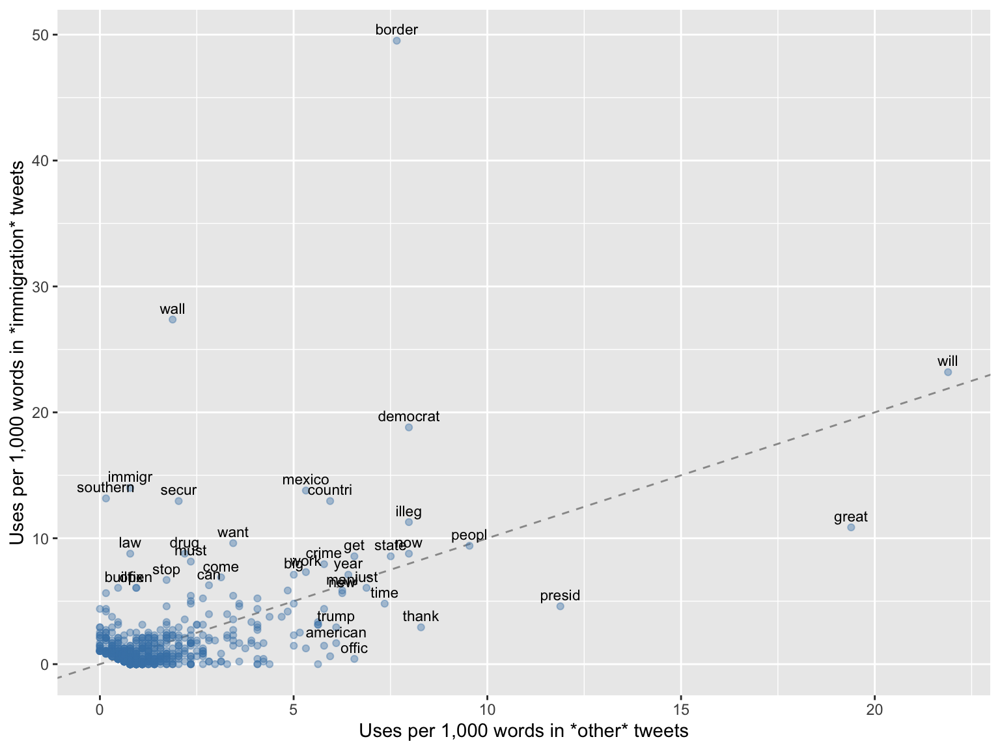
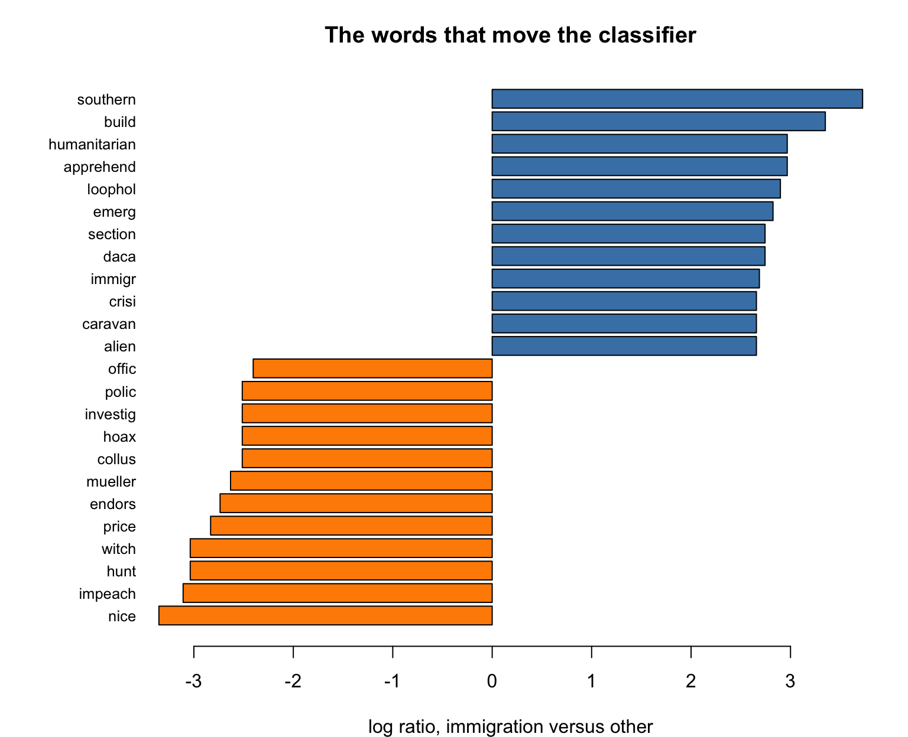

install.packages(c("tm", "SnowballC", "wordcloud", "e1071",
"caret", "ggplot2", "naivebayes"))4 Text as Data: Naive Bayes
Week 4, 23 September
Until now, our datasets came with features already prepared. The UN data included income and urbanization, and Fearon and Laitin supplied measured and coded covariates. We began modeling after those measurement decisions had been made.
This week we start with 905 tweets. Before fitting a model, we need to turn their text into features. The choices involved are part of the analysis: they determine which information the classifier can use and can account for many of its errors.
We will use Naive Bayes. It assumes something about language that is clearly false, yet can still classify text effectively. In the second half of the session, we will examine how that is possible.
4.1 What Naive Bayes is good at, and what it is not
Benefits.
- It fits by counting rather than optimization, so it is fast and can handle vocabularies of tens of thousands of words.
- It can perform well with small training sets, useful when people must read and label every training document.
- We can inspect the fitted word-frequency tables to see which words favor each label.
- It returns probabilities that can be turned into classifications using a threshold suited to the task.
There are two important limitations.
First, the method assumes conditional independence between words. We will discuss why that assumption does not describe language well.
Second, the labels come from human coding decisions. Our classifier learns to reproduce one person’s application of a scheme for identifying immigration tweets. It does not independently define immigration, and any arbitrary parts of the coding scheme also shape its training.
4.2 The data
The corpus contains 905 tweets posted by @realDonaldTrump in 2019. They have been filtered and hand-labeled according to whether immigration is a main subject.
Start by checking that the required packages are installed.
library(tm)
library(SnowballC)
library(wordcloud)
library(caret)
library(ggplot2)
options(scipen = 999)
url <- paste0("https://raw.githubusercontent.com/babakrezaee/",
"AppliedAI-PoliSci/refs/heads/main/data/",
"trump_immigration_2019.csv")
tweets <- read.csv(url, stringsAsFactors = FALSE)
nrow(tweets)[1] 905str(tweets)'data.frame': 905 obs. of 4 variables:
$ id : num 1084065832941031424 1183369132634456064 1097856727020720000 1149289425836367872 1184426268177129472 ...
$ date : chr "2019-01-12 20:33" "2019-10-13 21:09" "2019-02-19 21:53" "2019-07-11 20:08" ...
$ label: chr "other" "other" "immigration" "immigration" ...
$ text : chr "....the FBI was in complete turmoil (see N.Y. Post) because of Comey’s poor leadership and the way he handled t"| __truncated__ "Do you remember two years ago when Iraq was going to fight the Kurds in a different part of Syria. Many people "| __truncated__ "The failed Fast Train project in California, where the cost overruns are becoming world record setting, is hund"| __truncated__ "Democrats had to quickly take down a tweet called “Kids In Cages, Inhumane Treatment at the Border,” because th"| __truncated__ ...There are four columns: tweet ID, timestamp, label, and text.
Convert the outcome to a factor and set its level order explicitly, rather than relying on alphabetical order.
tweets$label <- factor(tweets$label, levels = c("other", "immigration"))
table(tweets$label)
other immigration
538 367 round(prop.table(table(tweets$label)), 3)
other immigration
0.594 0.406 The majority class is other, at roughly 59 percent. Predicting that label for every tweet would achieve that accuracy without using the text. Compare our model with this baseline, just as we compared against the base rate last week.
The two classes are much closer in size than last week’s war-onset classes, where the baseline was 98 percent. Accuracy is more informative here, but the balance comes from how the corpus was constructed. It does not describe Trump’s full Twitter output, so we cannot treat these tweets as representative of that stream.
4.3 Part I. From tweets to a matrix
4.3.1 Reading the text before modeling it
Before building a text model, read some of the documents.
for (i in 1:4) {
cat(as.character(tweets$label[i]), "|", tweets$text[i], "\n\n")
}other | ....the FBI was in complete turmoil (see N.Y. Post) because of Comey’s poor leadership and the way he handled the Clinton mess (not to mention his usurpation of powers from the Justice Department). My firing of James Comey was a great day for America. He was a Crooked Cop......
other | Do you remember two years ago when Iraq was going to fight the Kurds in a different part of Syria. Many people wanted us to fight with the Kurds against Iraq, who we just fought for. I said no, and the Kurds left the fight, twice. Now the same thing is happening with Turkey......
immigration | The failed Fast Train project in California, where the cost overruns are becoming world record setting, is hundreds of times more expensive than the desperately needed Wall!
immigration | Democrats had to quickly take down a tweet called “Kids In Cages, Inhumane Treatment at the Border,” because the horrible picture used was from the Obama years. Very embarrassing! @foxandfriends These four tweets show several things we will need to address: URLs, handles beginning with @, capitals used for emphasis, and curly quotation marks that R treats differently from straight ones. At least one label is also open to reasonable disagreement.
4.3.2 The bag of words
We will use a simple representation. First, consider what it leaves out.
We represent each document by the words it contains, discarding order, grammar, and the relationships between words. “The wall stopped the caravan” and “the caravan stopped the wall” therefore have the same representation.
This is the bag of words approach: we retain the words and their counts, as though they had been mixed together in a bag.
Whether this is adequate depends on the research question. For detecting immigration content, words such as border, caravan, and asylum are often useful regardless of order. A question about who did what to whom would require a representation that preserves more of the relationships between words.
4.3.3 Cleaning, one decision at a time
The tm package stores documents in a corpus.
corpus <- VCorpus(VectorSource(tweets$text))
corpus[[1]]$content[1] "....the FBI was in complete turmoil (see N.Y. Post) because of Comey’s poor leadership and the way he handled the Clinton mess (not to mention his usurpation of powers from the Justice Department). My firing of James Comey was a great day for America. He was a Crooked Cop......"tm_map() applies a transformation to the corpus and returns the transformed corpus. We need to build one transformation ourselves to remove a pattern from the text.
replace_with_space <- content_transformer(function(x, pattern) {
gsub(pattern, " ", x)
})content_transformer() wraps our character-string function so that tm_map() can apply it to individual documents. Use this wrapper when creating your own cleaning function.
clean <- tm_map(corpus, content_transformer(tolower))
clean <- tm_map(clean, replace_with_space, "http[s]?://\\S*")
clean <- tm_map(clean, replace_with_space, "@\\S+")
clean <- tm_map(clean, replace_with_space, "[^a-z ]")
clean <- tm_map(clean, removeWords, stopwords("english"))
clean <- tm_map(clean, stemDocument)
clean <- tm_map(clean, stripWhitespace)
clean[[1]]$content[1] "fbi complet turmoil see n y post comey s poor leadership way handl clinton mess mention usurp power justic depart fire jame comey great day america crook cop"Here are the seven cleaning steps and the choices they involve.
Lowercasing combines Wall and wall, which we want, but also US and us, which we might want to keep separate. A general lowercasing rule cannot distinguish them.
Removing URLs and handles simplifies the text but can remove useful information. For example, @ThomasHomanICE, the acting director of Immigration and Customs Enforcement, is highly informative about a tweet’s subject. We omit it for a simple pipeline. In the workshop, you could test whether retaining handles improves classification.
[^a-z ] removes everything except lowercase letters and spaces: punctuation, digits, emoji, and the curly quotation marks and en dashes left behind by removePunctuation(). Without this step, some features appear in the output as codes such as <U+2019>, which can be confusing to interpret.
Stopwords are words such as the, and, of, and is, which usually carry little topical information. Inspect the supplied list with head(stopwords("english"), 50). It includes not and against, both of which can be important in political text.
Stemming combines inflected forms: immigration, immigrants, and immigrate become immigr. This pools sparse features, but the resulting stems are not ordinary words and some combinations may be unsuitable.
Whitespace cleanup is cosmetic. Unlike the other steps, it does not make a substantive choice about which information to retain.
The order of cleaning steps also matters. Removing punctuation first changes don't to dont, so it no longer matches the stopword don't. Reversing the steps changes the vocabulary. Denny and Spirling (Denny and Spirling 2018) show why preprocessing deserves more attention than a brief sentence in an appendix: these decisions can change substantive results.
4.3.4 The document-term matrix
dtm <- DocumentTermMatrix(clean)
dtm<<DocumentTermMatrix (documents: 905, terms: 2735)>>
Non-/sparse entries: 16606/2458569
Sparsity : 99%
Maximal term length: 16
Weighting : term frequency (tf)The document-term matrix has one row per document and one column per term. Entry \(i\), \(j\) counts how often term \(j\) occurs in document \(i\).
There are close to three thousand terms across 905 tweets, so we have more columns than rows. The matrix is also 99 percent sparse: most cells are zero, since a tweet uses only around fifteen of the available words.
These properties are common in text data. They create difficulties for a conventional regression with three thousand predictors and nine hundred observations. Naive Bayes handles them through the assumption introduced below.
4.3.5 What is in the corpus
Compare the vocabulary in the two classes before fitting the model.
par(mfrow = c(1, 2), mar = c(0, 0, 2, 0))
set.seed(7)
wordcloud(clean[tweets$label == "immigration"], min.freq = 12,
random.order = FALSE, colors = brewer.pal(7, "Blues")[3:7])
title("immigration")
wordcloud(clean[tweets$label == "other"], min.freq = 12,
random.order = FALSE, colors = brewer.pal(7, "Oranges")[3:7])
title("other")Word clouds are useful for an initial look, though poor for inference: areas are hard to compare accurately, and the layout is random.
As expected, border and wall dominate the immigration cloud. But illeg appears in both classes because the negative class includes tweets about illegal wiretaps and impeachments. democrat is common in both because Trump attacks Democrats on many subjects. These near misses were included deliberately, so a single keyword is not enough to classify the corpus.
4.3.6 Splitting before anything else
The rows were shuffled before the file was distributed. Splitting by row number therefore gives an approximately random division.
n <- nrow(tweets)
train_id <- 1:floor(0.8 * n)
dtm_train <- dtm[train_id, ]
dtm_test <- dtm[-train_id, ]
y_train <- tweets$label[train_id]
y_test <- tweets$label[-train_id]
c(train = length(y_train), test = length(y_test))train test
724 181 round(prop.table(table(y_train)), 3)y_train
other immigration
0.613 0.387 round(prop.table(table(y_test)), 3)y_test
other immigration
0.519 0.481 The class proportions differ somewhat between the two sets. Use the test-set majority proportion as the baseline for test-set accuracy.
Split before selecting the vocabulary. We choose which words to retain using training data only. Selecting them from all 905 tweets would use information from the test set before evaluation, potentially making the score optimistic without an obvious warning in the output.
4.3.7 Trimming the vocabulary
Most terms appear only once or twice. They add many features while providing little evidence for generalization.
freq_words <- findFreqTerms(dtm_train, 5)
length(freq_words)[1] 651head(freq_words, 24) [1] "abl" "absolut" "abus" "act" "action" "actual"
[7] "adam" "administr" "african" "agenda" "agent" "ago"
[13] "agre" "agreement" "aid" "alien" "allow" "almost"
[19] "along" "alreadi" "also" "alway" "amend" "america" Requiring at least five occurrences in the training documents removes roughly three quarters of the vocabulary. Five is a conventional choice, not a uniquely correct threshold. Like \(k\) in Week 2 and the complexity parameter in Week 3, this choice could be guided by cross-validation. Try changing it in the workshop.
dtm_train <- dtm_train[, freq_words]
dtm_test <- dtm_test[, freq_words]Use the training vocabulary for the test matrix too. Words seen only in the test set are excluded because the fitted model has no training information about them.
4.3.8 The counts stay as counts
We keep the entries as counts: each cell records how many times a word occurs in a tweet.
counts_train <- as.matrix(dtm_train)
counts_test <- as.matrix(dtm_test)
dim(counts_train)[1] 724 651counts_train[1:3, 1:6] Terms
Docs abl absolut abus act action actual
1 0 0 0 0 0 0
2 0 0 0 0 0 0
3 0 0 0 0 0 0as.matrix() turns tm’s compressed representation into an ordinary R matrix, which is convenient at this size. For a corpus of a hundred thousand documents, memory requirements could make it necessary to retain the compressed form.
4.3.9 Two rates per word
We can now compare how often each word appears in the two classes. This calculation provides most of the quantities the classifier will need.
total_immigration <- colSums(counts_train[y_train == "immigration", ])
total_other <- colSums(counts_train[y_train == "other", ])
totals <- data.frame(word = freq_words,
immigration = total_immigration,
other = total_other)
head(totals[order(-totals$immigration), 2:3], 12) immigration other
border 237 49
wall 131 12
will 111 140
democrat 90 51
immigr 67 5
mexico 66 34
southern 63 1
countri 62 38
secur 62 13
illeg 54 51
great 52 124
want 46 22In the training data, border appears 237 times in immigration tweets and 49 times in other tweets.
To compare these counts, we need to account for differences in the groups’ size and total quantity of text.
sum(total_immigration)[1] 4786sum(total_other)[1] 6395The immigration class contains fewer words overall. Divide each count by its class total to obtain a rate: how many occurrences of this word are there per thousand words in that class?
rate_immigration <- 1000 * total_immigration / sum(total_immigration)
rate_other <- 1000 * total_other / sum(total_other)
rates <- data.frame(word = freq_words,
immigration = rate_immigration,
other = rate_other)
round(head(rates[order(-rates$immigration), 2:3], 12), 2) immigration other
border 49.52 7.66
wall 27.37 1.88
will 23.19 21.89
democrat 18.80 7.97
immigr 14.00 0.78
mexico 13.79 5.32
southern 13.16 0.16
countri 12.95 5.94
secur 12.95 2.03
illeg 11.28 7.97
great 10.87 19.39
want 9.61 3.44Read the first row conditionally. Within immigration tweets, about 50 words per thousand are border. Within the other tweets, about 8 are.
This is a conditional probability: a rate within a subgroup. We are asking how common border is within each class, rather than across the corpus as a whole. Naive Bayes uses these class-specific proportions, which we can calculate from colSums().
ggplot(rates, aes(other, immigration)) +
geom_abline(slope = 1, intercept = 0, colour = "gray60", linetype = 2) +
geom_point(alpha = 0.4, colour = "steelblue") +
geom_text(data = subset(rates, immigration > 6 | other > 6),
aes(label = word), size = 3, vjust = -0.6) +
labs(x = "Uses per 1,000 words in *other* tweets",
y = "Uses per 1,000 words in *immigration* tweets")
The dashed line marks equal rates. A word on that line does not help distinguish the classes. Words farther from it provide more information, and the side of the line indicates which label they favor.
Most words are rare in both classes and cluster near the origin. Above the line are border, wall, southern, secur, and immigr, which favor immigration. Below it are words such as great, presid, and thank, which favor the other class. will is common in both and contributes little to distinguishing them.
We have not fitted the classifier yet, but this plot shows the rate comparison it will use.
4.4 Part II. Naive Bayes
4.4.1 The question the model asks
Given a tweet’s words, how likely is it to be about immigration? That is the question we want to answer.
Estimating every possible combination of words directly would require much more than our 724 training tweets. Most combinations have never appeared in those data.
Instead, we calculate how likely the words are under each label. The rates above provide those quantities, which we can compare to work back toward the label.
For a tweet containing border and wall:
- Under the immigration label, these words are relatively common: about 50 and 27 occurrences per thousand words, respectively.
- Under the other label, their rates are much lower: about 8 and 2 per thousand.
These words favor immigration. Bayes’ rule lets us use word probabilities conditional on a label to infer label probabilities conditional on the words. It also accounts for the relative frequency of the labels, so a rare label needs stronger evidence. We will use this intuition here; the further reading provides the algebra.
4.4.2 The naive assumption, which is false
We still need a way to calculate the probability of a whole combination of words. Naive Bayes simplifies this by assuming:
Assume that, within a class, each word appears independently of every other.
Under this assumption, knowing that an immigration tweet contains southern would tell us nothing further about whether it contains border.
That does not fit the language in this corpus. Southern and border often appear together, as do illegal and immigration, and caravan and migrant. Words are related to one another.
The assumption is useful computationally because it lets us multiply separate word rates instead of estimating the probability of every word combination. We can estimate those rates from a few hundred documents.
One consequence is overconfidence. A tweet with border, southern, wall, and patrol supplies correlated evidence, but the model treats the words as four independent signals. Its probabilities can therefore cluster near 0 and 1. Useful rankings do not imply calibrated probabilities. We may use these scores to order documents while being cautious about interpreting their confidence literally.
4.4.3 Words that never occurred
Before fitting, consider words that occur in one training class but never in the other.
never_in_other <- names(which(total_other == 0))
length(never_in_other)[1] 21never_in_other [1] "aid" "alien" "apprehend" "build" "caravan"
[6] "census" "citizenship" "cross" "daca" "deport"
[11] "emerg" "expens" "humanitarian" "migrant" "progress"
[16] "reduc" "renov" "schumer" "section" "solv"
[21] "stay" Twenty-one words occur in immigration tweets but never in other tweets. Some are unsurprising, such as caravan, deport, daca, and migrant. Others, including stay and progress, may be absent from the other class simply by chance.
Their estimated rate in other would be zero. Since the model multiplies rates, one zero would make the whole product zero: caravan alone would rule out other, regardless of the remaining thirty words. Six thousand words of training text do not justify that certainty. Laplace smoothing adds one occurrence of every word to each class before calculating rates, preventing a single unobserved word from ruling a class out.
4.4.4 Fitting
Fitting takes two lines using the counts we have already calculated.
p_immigration <- (total_immigration + 1) / sum(total_immigration + 1)
p_other <- (total_other + 1) / sum(total_other + 1)Each vector gives the vocabulary’s word proportions within one class. The + 1 applies smoothing. Including it in the denominator keeps each vector’s entries summing to one.
We also need the prior probabilities: how common each label is. Without informative words, the model should favor the more common label.
prior_immigration <- mean(y_train == "immigration")
prior_other <- mean(y_train == "other")
round(c(other = prior_other, immigration = prior_immigration), 3) other immigration
0.613 0.387 The model consists of two word-rate tables and two prior probabilities. There is no iterative optimization or convergence step, and no random seed needed for the fit. Unlike last week’s forest, we can inspect these fitted quantities directly.
round(1000 * c(immigration = p_immigration[["border"]],
other = p_other[["border"]]), 2)immigration other
43.77 7.10 round(1000 * c(immigration = p_immigration[["great"]],
other = p_other[["great"]]), 2)immigration other
9.75 17.74 round(1000 * c(immigration = p_immigration[["caravan"]],
other = p_other[["caravan"]]), 2)immigration other
2.02 0.14 border favors immigration, while great favors other. Smoothing gives caravan a small nonzero rate in other, so a tweet mentioning caravans can still receive that label if its remaining words support it strongly enough.
Note
The e1071 package provides naiveBayes(), but numeric matrix inputs are treated as normally distributed within each class. That is unsuitable for these word counts, most of which are zero; on this matrix it classifies almost every tweet as immigration. The calculations above implement the text-count version of Naive Bayes explicitly.
4.4.5 Predicting
For a new tweet, compare how well the two rate tables account for its words and assign the label with the higher score.
score_immigration <- as.vector(counts_test %*% log(p_immigration)) +
log(prior_immigration)
score_other <- as.vector(counts_test %*% log(p_other)) +
log(prior_other)
pred <- factor(ifelse(score_immigration > score_other, "immigration", "other"),
levels = c("other", "immigration"))
head(pred)[1] other other immigration other immigration other
Levels: other immigrationFor each tweet, the matrix multiplication adds a word’s log rate under a label once per occurrence. Using border four times therefore contributes four times as much evidence as using it once. This is why we retained counts rather than just presence or absence.
Multiplying hundreds of small probabilities risks numerical underflow. Adding their logarithms avoids that problem while preserving the ordering of the scores, which is what we use for classification.
4.4.6 The confusion matrix
cm <- table(Predicted = pred, Actual = y_test)
cm Actual
Predicted other immigration
other 82 5
immigration 12 82accuracy <- sum(diag(cm)) / sum(cm)
round(accuracy, 4)[1] 0.9061baseline <- mean(y_test == "other")
round(baseline, 4)[1] 0.5193The model gets roughly 90 percent correct, compared with a baseline of roughly 52 percent. That is a much larger improvement than we saw last week.
Remember which data this score describes. The corpus was assembled to make the classes comparable in size. Immigration tweets are a minority of Trump’s full 2019 output, and the remaining tweets cover more varied subjects than our negative class. Applying the classifier to that stream would create more opportunities for false alarms and reduce performance.
Inspect the confusion matrix as well as the overall score.
confusionMatrix(pred, y_test, positive = "immigration")Confusion Matrix and Statistics
Reference
Prediction other immigration
other 82 5
immigration 12 82
Accuracy : 0.9061
95% CI : (0.8539, 0.9443)
No Information Rate : 0.5193
P-Value [Acc > NIR] : <0.0000000000000002
Kappa : 0.8124
Mcnemar's Test P-Value : 0.1456
Sensitivity : 0.9425
Specificity : 0.8723
Pos Pred Value : 0.8723
Neg Pred Value : 0.9425
Prevalence : 0.4807
Detection Rate : 0.4530
Detection Prevalence : 0.5193
Balanced Accuracy : 0.9074
'Positive' Class : immigration
caret reports several useful quantities. We introduce three here and return to them in Week 6.
No Information Rate is the majority-class baseline, accompanied by a test of whether the model beats it.
Sensitivity, or recall, is the proportion of immigration tweets the model identifies. Here it catches almost all of them.
Positive predictive value, or precision, is the proportion of flagged tweets that are genuinely about immigration. It is lower here: the model tends to over-flag rather than miss borderline cases.
Their relative importance depends on the task. If we want to estimate the immigration share of Trump’s output, false positives inflate it, making precision important. If we want to retrieve tweets for someone to read, recall may matter more, because false positives mainly add reading time.
4.4.7 The most informative words
For each word, compare its rates across the two classes. Using a log ratio puts evidence in both directions on a symmetric scale.
log_ratio <- sort(log(p_immigration / p_other))
top <- c(head(log_ratio, 12), tail(log_ratio, 12))
par(mar = c(4, 7, 3, 2))
barplot(top, horiz = TRUE, las = 1, cex.names = 0.8,
col = ifelse(top > 0, "steelblue", "darkorange"),
xlab = "log ratio, immigration versus other",
main = "The words that move the classifier")
Unlike the forest’s importance ranking, this plot shows direction as well as strength. southern, apprehend, caravan, alien, humanitarian, and loophol favor immigration. impeach, witch, hunt, collus, and mueller favor the other class.
The orange words show a limitation. Impeachment and the Mueller investigation are not conceptually the opposite of immigration; they were other subjects Trump discussed in 2019. The classifier learns that distinction from this corpus. We should not assume it will transfer to another year or author.
4.4.8 Reading the errors
Fewer than twenty test tweets were misclassified. Read them to understand the errors behind the score.
test_text <- tweets$text[-train_id]
wrong <- which(pred != y_test)
length(wrong)[1] 17for (i in head(wrong, 6)) {
cat("actual:", as.character(y_test[i]),
"| predicted:", as.character(pred[i]), "\n",
substr(test_text[i], 1, 180), "\n\n")
}actual: other | predicted: immigration
Everyone very excited about the new deal with Mexico!
actual: immigration | predicted: other
While the reviews and reporting on our Border Immigration Agreement with Mexico have been very good, there has nevertheless been much false reporting (surprise!) by the Fake and Co
actual: other | predicted: immigration
“This is not Congressional Oversight, this is bullying.” Jason Riley, The Wall Street Journal
actual: other | predicted: immigration
Kevin Corke, @FoxNews “Don’t forget, Michael Cohen has already been convicted of perjury and fraud, and as recently as this week, the Wall Street Journal has suggested that he may
actual: immigration | predicted: other
Our Border Control Agents have done an incredible job under very adverse conditions. I am very proud to have increased their salaries because of the great job they do. Nobody deser
actual: other | predicted: immigration
As Corey Lewandowski stated very clearly yesterday in front of the House Judiciary Committee, President Trump didn’t do anything wrong or illegal. But they all know that. The Democ Several patterns appear in these errors.
Two of the six tweets concern the Wall Street Journal, which triggers wall. Another uses illegal in a different context, triggering illeg. A bag of individual words cannot distinguish the phrase Wall Street from the border-wall vocabulary.
Two errors go the other way. A tweet about reporting on the Border Immigration Agreement with Mexico uses the language of media attacks. Another praises Border Control agents for a great job, using a strong other word. Both concern immigration, but their vocabulary favors the other label.
Remove head() to inspect the remaining eleven errors. One endorsement describes Senator Cindy Hyde-Smith as strong on the border and illegal immigration. The codebook labels endorsement boilerplate other, treating the border as one item in a formula. The model disagrees with that contestable rule. Another tweet thanks @DHSgov, @CBP, and @ICEgov. After removing the handles, little remains beyond thank you, and the model predicts other despite the immigration label.
These patterns suggest different responses: include word pairs to distinguish Wall Street, retain informative handles, and reconsider how to represent endorsement boilerplate. A bag of words alone cannot resolve that coding distinction.
4.4.9 The same model in caret
We wrote the calculations ourselves so you could see how the classifier works. For your own projects, a package is more convenient. We will use caret, as we did for the forest.
method = "naive_bayes" calls the naivebayes package, which needs to be installed.
install.packages("naivebayes")We first change the features to two-level factors recording whether each word is present. As noted above, these functions otherwise treat numeric columns as normally distributed within classes, which poorly describes our mostly zero word counts.
as_yes_no <- function(counts) {
out <- as.data.frame(counts > 0)
out[] <- lapply(out, function(x) {
factor(x, levels = c(FALSE, TRUE), labels = c("No", "Yes"))
})
out
}
X_train <- as_yes_no(counts_train)
X_test <- as_yes_no(counts_test)
X_train[1:3, 1:5] abl absolut abus act action
1 No No No No No
2 No No No No No
3 No No No No NoWe set the two factor levels explicitly. Otherwise, a word absent from every test tweet would have only one level in the test data, and predict() would reject the mismatch.
set.seed(7)
nb_caret <- train(x = X_train, y = y_train,
method = "naive_bayes",
trControl = trainControl(method = "cv", number = 5),
tuneGrid = expand.grid(laplace = c(0, 1),
usekernel = FALSE,
adjust = 1))
nb_caretNaive Bayes
724 samples
651 predictors
2 classes: 'other', 'immigration'
No pre-processing
Resampling: Cross-Validated (5 fold)
Summary of sample sizes: 579, 579, 579, 579, 580
Resampling results across tuning parameters:
laplace Accuracy Kappa
0 0.9019540 0.7915019
1 0.9019732 0.7921890
Tuning parameter 'usekernel' was held constant at a value of FALSE
Tuning parameter 'adjust' was held constant at a value of 1
Accuracy was used to select the optimal model using the largest value.
The final values used for the model were laplace = 1, usekernel = FALSE
and adjust = 1.The call follows the same structure as Week 3: inputs, a resampling scheme, and a tuning grid. Smoothing is now a parameter selected by cross-validation between laplace = 0 and laplace = 1, using training data only.
pred_caret <- predict(nb_caret, X_test)
confusionMatrix(pred_caret, y_test, positive = "immigration")Confusion Matrix and Statistics
Reference
Prediction other immigration
other 83 8
immigration 11 79
Accuracy : 0.895
95% CI : (0.8409, 0.9356)
No Information Rate : 0.5193
P-Value [Acc > NIR] : <0.0000000000000002
Kappa : 0.79
Mcnemar's Test P-Value : 0.6464
Sensitivity : 0.9080
Specificity : 0.8830
Pos Pred Value : 0.8778
Neg Pred Value : 0.9121
Prevalence : 0.4807
Detection Rate : 0.4365
Detection Prevalence : 0.4972
Balanced Accuracy : 0.8955
'Positive' Class : immigration
Accuracy is slightly below our count-based model. This version records whether border occurs, whereas our earlier model also uses how often it occurs. Repetition carries extra evidence in the count model. That difference is small for short tweets but can matter more in longer documents.
Using caret gives us cross-validation, a tuning grid, and a familiar interface. The underlying calculations are now inside an object rather than displayed as word-rate tables, so we need to make a more deliberate effort to inspect them.
4.5 The politics of classification
The classification tasks in this course sort cases into categories. For political text, those categories concern speech.
Our classifier reads political speech and assigns a topic. Similar classification tasks appear in content moderation, media monitoring, and state surveillance. Thinking about those uses helps us see why even this small teaching example raises political questions.
Consider two aspects of the model we built.
First, someone chose immigration and other as the categories. The model cannot determine whether that was the right distinction for the research question. High accuracy does not justify the choice of categories.
Second, the errors have a pattern. False positives include tweets using immigration vocabulary for another purpose. In deployed systems, such patterns affect particular forms of speech and the people who use them. The consequences differ greatly between a measurement error in a paper and a classification that triggers a takedown, investigation, or visit.
We have asked who defines similarity and who selects the warning threshold. Here, ask who writes the codebook. Those decisions shape the model before fitting and may be difficult to see in its output.
4.6 Reading
Grimmer, J., and Stewart, B. M. 2013. “Text as Data: The Promise and Pitfalls of Automatic Content Analysis Methods for Political Texts.” Political Analysis 21(3): 267–297. (Grimmer and Stewart 2013)
This article introduces the field and several principles we have used: language models simplify language, no method is best for every task, and validation is essential. Read its discussion of supervised methods alongside Part II, paying attention to the problems it asks researchers to check.
Denny, M. J., and Spirling, A. 2018. “Text Preprocessing For Unsupervised Learning: Why It Matters, When It Misleads, and What To Do About It.” Political Analysis 26(2): 168–189. (Denny and Spirling 2018)
Read this alongside our cleaning steps. The authors show that preprocessing choices, including stemming, stopwords, and lowercasing, can change substantive conclusions, and that their order matters. Their analysis concerns unsupervised learning, but supervised pipelines also need scrutiny beyond an accuracy score.
Barberá, P., Boydstun, A. E., Linn, S., McMahon, R., and Nagler, J. 2021. “Automated Text Classification of News Articles: A Practical Guide to Using Supervised Machine Learning Methods.” Political Analysis 29(1): 19–42. (Barberá et al. 2021)
This is a practical companion to our exercise. Focus on the human coding stage, especially the number of coders and how to handle disagreement. Our corpus has only one coder, which limits what we can establish about the labels.
Recommended, not required.
Hopkins, D. J., and King, G. 2010. “A Method of Automated Nonparametric Content Analysis for Social Science.” American Journal of Political Science 54(1): 229–247. (Hopkins and King 2010)
Read this if your project will estimate category proportions rather than retrieve individual documents. The authors show why optimizing document-level accuracy can still produce biased proportions when errors do not cancel. That distinction matters for questions such as the share of tweets concerning immigration.
4.7 Before the workshop
Install tm, SnowballC, wordcloud, caret, e1071, and naivebayes, and run every chunk before the workshop. The pipeline should run in well under a minute. Although we do not call e1071 directly, caret needs it to report the confusion matrix.
Read data/trump_immigration_2019_README.md, especially the coding scheme and four rules for difficult cases. It also includes a content warning: the tweets contain disputed claims about immigrants and some offensive language. We retain the original text to preserve the corpus.
4.8 Questions for the session
Prepare an answer to at least two questions.
The independence assumption is false of language and the classifier works anyway. What does that suggest about the relationship between the realism of a model’s assumptions and its usefulness? Is your answer the same for a predictive model as for an explanatory one?
Our cleaning pipeline deleted
@ThomasHomanICE, the handle of the acting director of ICE, whose presence is close to decisive evidence about a tweet’s topic. Defend the deletion. Then defend the opposite choice. Which argument would you actually make in a paper, and what would you have to report either way?The coding scheme decides that immigration mentioned as the seventh item in a list of accomplishments is
other. A different coder could decide otherwise. Trace what would change: the labels, the model, the accuracy, and the substantive claim you would end up making about how much of Trump’s 2019 output concerned immigration.The classes were deliberately made roughly balanced, which makes accuracy more interpretable but means the corpus does not represent the full tweet stream. What would you change if your question concerned the share of Trump’s 2019 tweets about immigration rather than the classification of individual tweets?
This handout built a machine that reads political speech and decides what it is about, using roughly forty lines of R and 724 labeled examples. Given how little that took, what follows about who is able to build such systems, and about what a political scientist’s distinctive contribution to them should be?